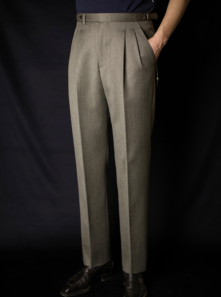
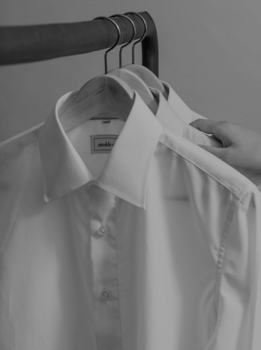

B&TAILOR
FULL-HAND BESPOKE

Fabric of the Month
Drago 180 Grey Herringbone
Coat fabric 14.5 micron 180 wool "SKYFALL"
It's a coat that's very soft and cozy like cashmere, and it's thick and waterproof to wear warmly. Usually, as soon as the water touches it, it gets wet, or even if you spray it with water, it's a fabric that disappears when you shake it off rather than get wet. The fabric is not waterproof-related poly, synthetic fiber, or nylon, so it would be better to see it as a fabric with a waterproof function rather than a waterproof fabric. It must be a very good fabric even when it snows or rains in winter.
#bntailor#bespoke#fullhandmade
B&TAILOR READY TO WEAR
the R.T.W. label to
provide a variety of services.
-

TROUSER
The B&Taylor READY TO WEAR trouser gives you a comfortable silhouette.
-
EASY-WEAR
It is based on comfort but can be styled in a more fully dressed mood
-
JACKET
It has a silhouette and balance that minimizes the shortcomings of ready-to-wear.
-

SHIRT
Various details and silhouette are reflected to distinguish between dress shirts and casual shirts.
-
Accessory
Based on the quality that can last for a long time, various accessories such as ties, scarves, and shoes are introduced.